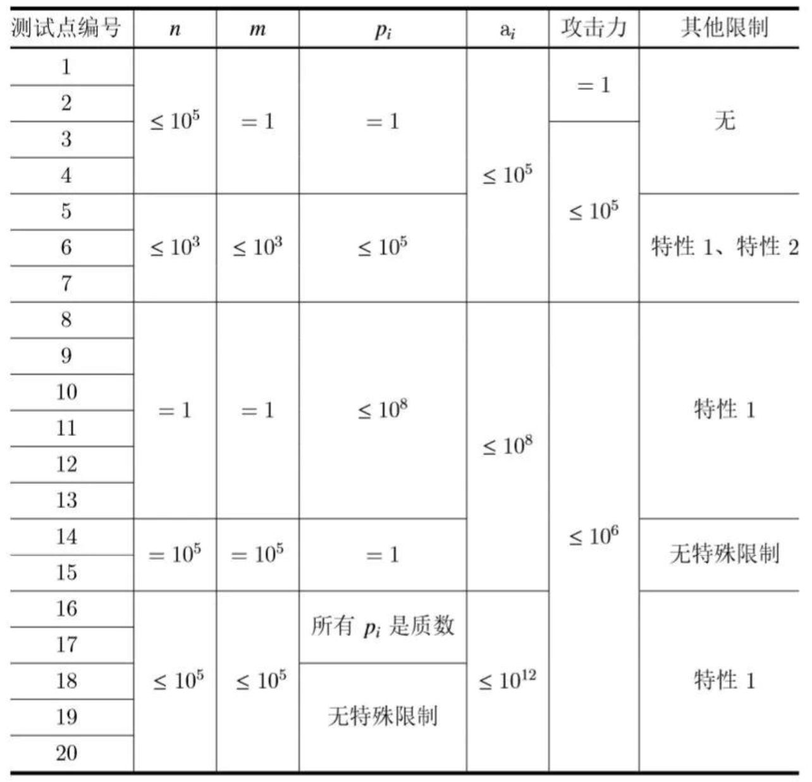

【样例 1 解释】
第一组数据：
- 开始时拥有的剑的攻击力为{1,9,10}，第1条龙生命值为3，故选择攻击力为1的剑，攻击59次，造成59点伤害，此时龙的生命值为-56，恢复14次后生命值恰好为0，死亡。
- 攻击力为1的剑消失，拾取一把攻击力为7的剑，此时拥有的剑的攻击力为{7,9,10}，第2条龙生命值为5，故选择攻击力为7的剑，攻击59次，造成413点伤害，此时龙的生命值为-408，恢复68次后生命值恰好为0，死亡。
- 此时拥有的剑的攻击力为{3,9,10}，第3条龙生命值为7，故选择攻击力为3的剑，攻击59次，造成177点伤害，此时龙的生命值为-170，恢复17次后生命值恰好为0，死亡。
- 没有比59次更少的通关方法，故答案为59。
第二组数据：
- 不存在既能杀死第一条龙又能杀死第二条龙的方法，故无法通关，输出-1。
【子任务】

特性 1 是指：对于任意的$i$，$a_i \le p_i$。
特性 2 是指：$LCM(p_i) \le 10^6$，即所有的$p_i$最小公倍数不大于$10^6$。
对于所有的测试点，$T \le 5$，所有武器的攻击力$ \le 10^6$，所有$p_i$的最小公倍数$\le 10^{12}$。
【提示】
你所用到的中间结果可能很大，注意保存中间结果的变量类型。
 Comet OJ
Comet OJ